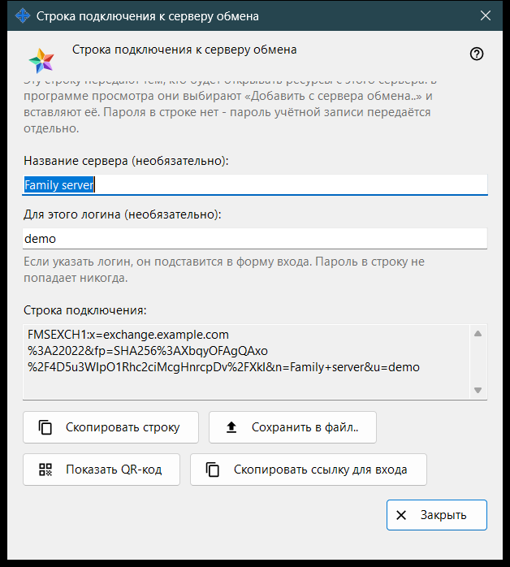
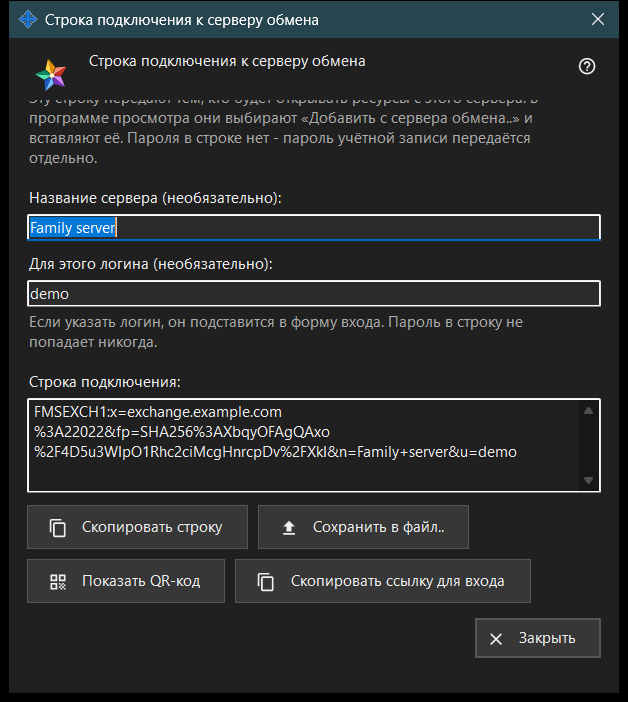

Строка подключения к серверу обмена
Назначение
В этом окне составляется строка подключения, по которой другие устройства находят этот сервер обмена и проверяют его сертификат. Окно открывается кнопкой «Строка подключения и QR-код..» в настройках сервера обмена или в приветствии сервера при первом запуске. Окно ничего не меняет в настройках.


Порядок действий
- Убедитесь, что у сервера есть сертификат и задан адрес для клиентов.
- Откройте окно: строка появляется сразу.
- При желании введите название сервера и логин; строка пересоберётся через мгновение после того, как вы перестанете печатать.
- Скопируйте строку, сохраните её в файл, покажите QR-код или скопируйте ссылку для входа.
- Передайте результат другому человеку, а пароль учётной записи - отдельно.
- Нажмите «Закрыть».
Элементы окна
Когда кнопка доступна
Кнопка «Строка подключения и QR-код..» доступна, только когда у сервера есть сертификат и задан адрес для клиентов. Если адрес пуст, кнопка отключена, а подсказка под ней говорит: «Сначала задайте адрес для клиентов: без него строку подключения составить нельзя.» Внутри окна кнопки отключены, если строки нет.
Название сервера и логин
«Название сервера (необязательно):» - до 64 символов; оно записывается в строку как название сервера. «Для этого логина (необязательно):» - от 3 до 64 знаков (a-z, 0-9, точка, подчёркивание, дефис); этот логин подставляется в форму входа на устройстве, которое использует строку. Пароль в строку не попадает никогда.
Строка подключения
В поле «Строка подключения:» (только чтение) показан результат: адрес для клиентов, отпечаток сертификата и необязательные название и логин. Устройство, получившее строку, доверяет отпечатку из неё, поэтому сравнивать его вручную не нужно.
Копирование и сохранение
«Скопировать строку» помещает строку в буфер обмена обычным текстом, потому что она не секретна; строка ниже сообщает «Строка скопирована.» «Сохранить в файл..» записывает текстовый файл .fmsexch (предлагаемое имя exchange-server.fmsexch) и показывает путь к нему; другое устройство читает такой файл кнопкой «Открыть файл..» в окне учётной записи обмена. Если буфер обмена занят или файл записать не удалось, строка состояния сообщает об этом.
QR-код и ссылка для входа
«Показать QR-код» открывает картинку с той же строкой для сканирования; она называет сервер и не даёт доступа ни к чему. «Скопировать ссылку для входа» появляется, только если этот сервер отдаёт веб-клиент; она копирует ссылку для браузера с той же строкой.
Если строку не удалось составить
Строка предупреждающего цвета называет причину: название или логин вне допустимых пределов; у сервера нет сертификата (запустите сервер один раз); сервер обмена не ответил. Устраните причину - и строка пересоберётся. «Закрыть» завершает работу окна; название и логин не сохраняются.
Настройки менеджера · Настройки общего доступа SFTP · Настройки сервера обмена